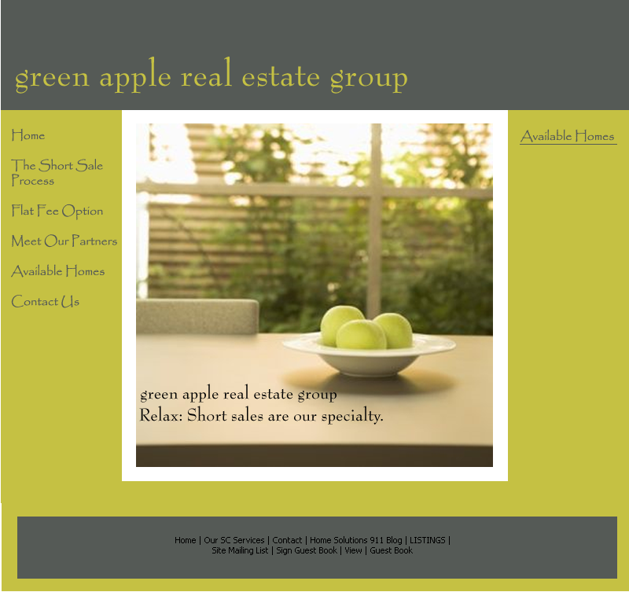
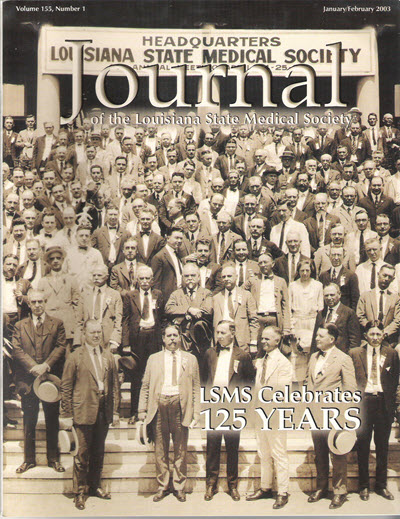

Organizational Communications Samples
Before technical writing, I created websites, wrote newsletters, and edited magazines. Here are some samples:
Proposal to Promote a CRM SoftWare for Theater Companies
- Goal: Increase sales of CRM software by showing the advantages of using Alliance Software Corporation's
 services.
services.

Proposal to Promote a Real Estate Company that Specializes in Short Sales
- Goal: Assure potential customers of more relaxed experience when dealing with real estate short sales.

Journal of the Louisiana State Medical Society
- Designed the covers and page layouts
- Edited the text
Spontaneous Regression of Cervical Disc Hernication

Lessons Learned from Dirty Diapers

Malicious Prosecution
LSMS Celebrates 125 Years

Physician Assisted Suicide

Theater Banner
- Goal: Entice the General Public to Come to the Play
- Goal: Provide an idea of the play's plot
- BTW, the play won a Best of Charleston Award that year!

Actor's Website (2010)